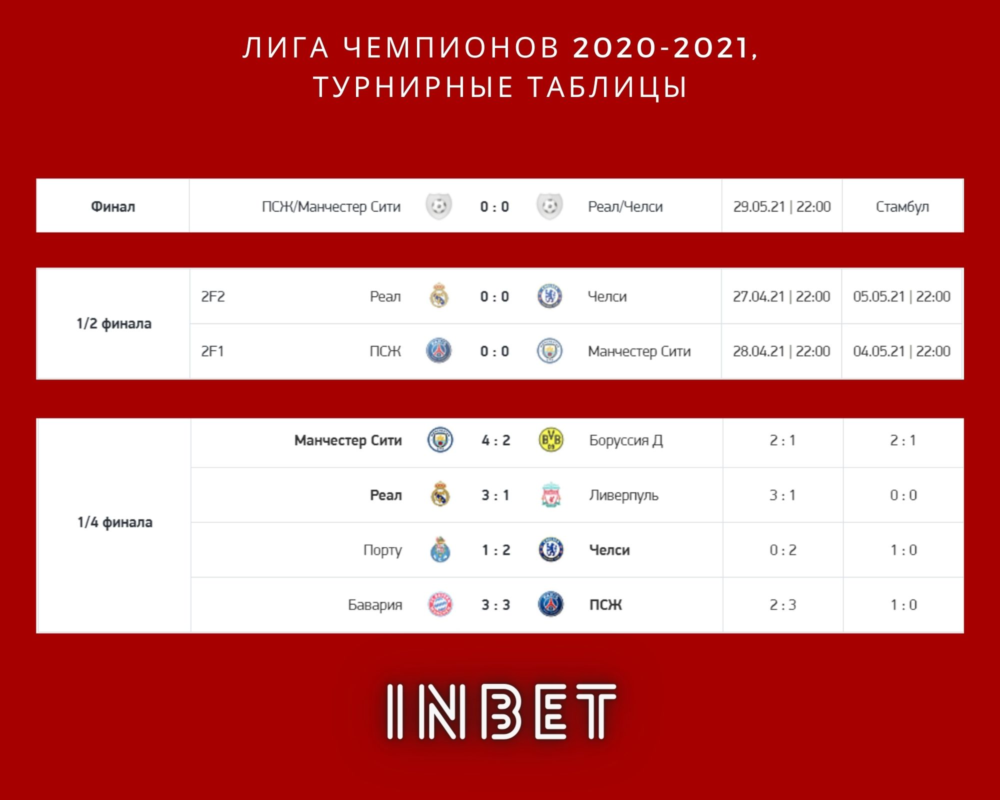

Новости о спорте
-
«Барселона» обыграла «Хетафе» в матче 31-го тура чемпионата Испании
(5:2). Капитан каталонцев Лионель Месси забил два гола и сделал голевую передачу.
«Барселона» идет на 3-м месте в турнирной таблице ла лиги. «Хетафе» занимает 15-ю строчку.
Чемпионат Испании
31-й тур
«Барселона» — «Хетафе» — 5:2 (3:1)
-
«
Лестер» одержал победу над «Вест Бромвичем» в матче 32-го тура чемпионата Англии со счетом 3:0.
На 23-й минуте счет открыл Джейми Варди. Джонни Эванс удвоил преимущество своей команды на 26-й минуте. Третий
гол на 36-й минуте забил Келечи Ихеаначо.
«Лестер» идет на третьем месте в турнирной таблице с 59 очками. «Вест Бромвич» на 19-м с 24 очками.
Чемпионат Англии. Премьер-лига
32-й тур
«Лестер» — «Вест Бромвич Альбион» — 3:0 (3:0)
Информация
Ставки
Статистика
Полезное
Дополнительное